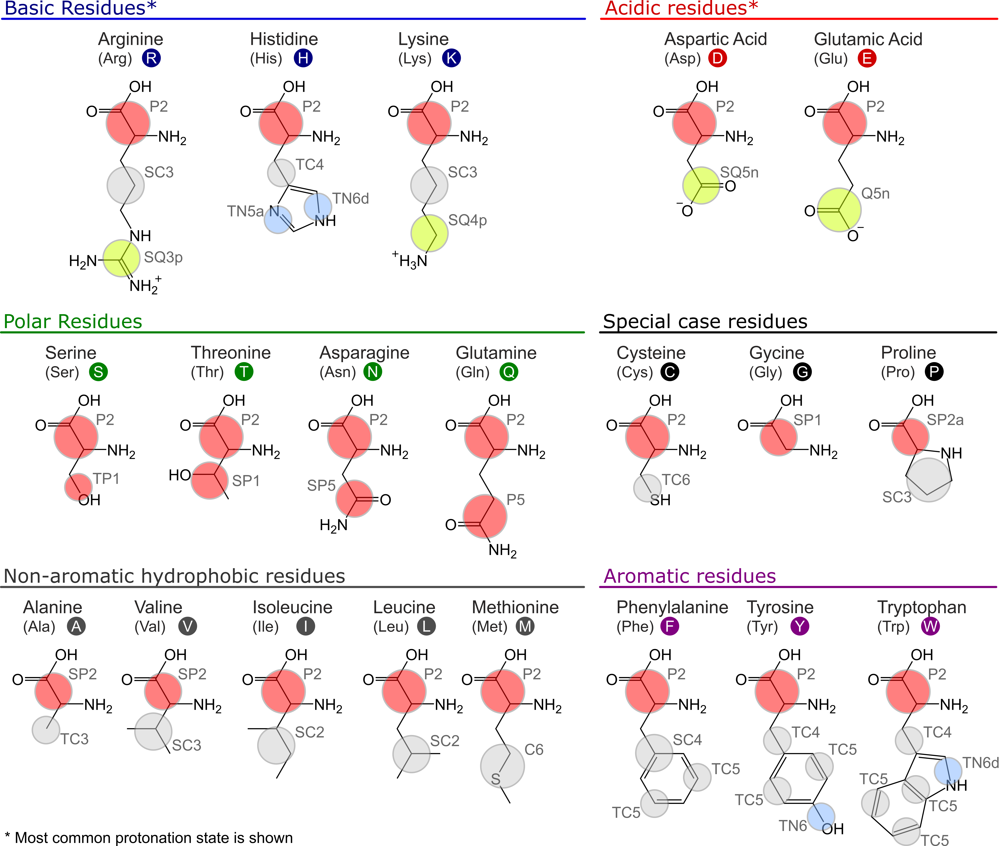

Martini 3 protein models - a practical introduction to different structure bias models and their comparison
If you would like to refer to information of this tutorial, please cite T. Duve, L. Wang, L. Borges-Araújo, S. J. Marrink, P. C. T. Souza, S. Thallmair, Martini 3 Protein Models - A Practical Introduction to Different Structure Bias Models and their Comparison, bioRxiv (2025), doi: 10.1101/2025.03.17.643608.
In case of issues, please contact duve@fias.uni-frankfurt.de, luis.borges@ens-lyon.fr, or thallmair@fias.uni-frankfurt.de.
Table of contents
Introduction
The Martini 3 protein model comprises two layers, which are strictly separated from each other: The first layer contains the mapping and chosen chemical bead types as well as the bonded terms; the second layer is the structure bias model. While the first layer corresponds to the standard definition of any molecule in the Martini universe, the second layer is more specific for proteins: To maintain the secondary, tertiary and quaternary structure of proteins, the directionality of interactions, in particular hydrogen bonds, are crucial. Due to the spherical potentials used in Martini 3 and many other CG force fields, this directionality is lost. Therefore, a structure bias model is required to stabilize protein structures. The strict separation between the two layers in Martini 3 enables independent development on both layers and is in contrast to the Martini 2 model[12], where mappings, bead types, and bonded terms were specific to each of the protein models. The first layer of the current Martini 3 protein model is mostly inherited from the Martini 2 model with moderate updates concerning the new mapping guidelines, bead types, and sizes. The Martini 3 mappings and bead types of the proteinogenic amino acids are depicted in Figure 1. A key difference to the previous model is that the bead type of the backbone (BB) bead does not depend on the secondary structure anymore but is represented by a P2 bead. Exceptions are the special cases glycine (SP1), alanine (SP2), valine (SP2), proline (SP2a), and terminal beads (Q5 for charged and P6 for neutral termini) [13].

Here, we will focus on the setup, fine-tuning options, and evaluation of the second layer of the Martini 3 protein model – the structure bias model – as well as on dedicated options for intrinsically disordered regions (IDRs). Overall, the Martini protein models require specific bonded terms to model the secondary structure [10, 12], which is in most cases combined with side-chain dihedral corrections [14]. In addition, there are three main options for structural bias models in layer 2 available, typically used to stabilize tertiary and quaternary structures, namely Elastic Network (EN) [3, 15, 16], GōMartini [13], and OLIVES [17] (Figure 2). Whereas the ad-hoc EN approach provides the most robust and straightforward way of stabilizing a protein structure, and has traditionally been used in Martini, the bioinformatics-based GōMartini approach is nowadays the method of choice as it has proven to be a more versatile method, striking a balance between protein stability and flexibility. Most recently, OLIVES was introduced as a physics-based variant of GōMartini, with the particular prospect of biasing quaternary structures as well.
In their simplest form, each of these three structure bias models relies on an atomistic reference structure which can be obtained from experiments or prediction software. The EN model uses harmonic potentials between the BB beads within a cutoff distance to maintain the protein structure. In contrast, both the GōMartini and OLIVES models employ Lennard-Jones potentials in a Gō-type manner, allowing for contact dissociation. In the GōMartini model, the potentials are defined from a contact map based on native contacts, evaluated through overlap and restricted contacts of structural units [18, 19], combined with a distance cutoff. The OLIVES model, on the other hand, defines its bias by evaluating the hydrogen bonding interactions between BB as well as side chain (SC) beads [17]. For small structured systems, such as single α-helices, the waiver of a structural bias model can be an option as well.
Tutorial Sections
The tutorial is structured as follows:
Tutorial I.I: Setup of Martini 3 Protein Structure Models- Tutorial I.I provides details on how to set up a Martini 3 protein model, taking a protein kinase as our workhorse, and using either EN, GōMartini, or OLIVES, together with secondary structure-specific bonded terms and side-chain corrections.
Tutorial I.II: Metrics to Compare Protein Structure Models- The evaluation of the performance of the model in comparison to atomistic reference simulations is discussed in Section Tutorial I.II.
Tutorial I.III: Simulations of IDRs in Martini 3- Tutorial I.III gives an example for the addition of an IDR to the structured domain of the kinase.
Tutorial I.IV: Additional notes, limitations & conclusion- Additional notes and limitations are discussed in Tutorial I.IV.1, before we conclude in Tutorial I.IV.2.
References
- Borges-Araújo L, Patmanidis I, Singh AP, et al (2023) Pragmatic Coarse-Graining of Proteins: Models and Applications. J Chem Theory Comput 19:7112–7135. https://doi.org/10.1021/acs.jctc.3c00733
- Samuel Russell PP, Alaeen S, Pogorelov TV (2023) In-Cell Dynamics: The Next Focus of All-Atom Simulations. J Phys Chem B 127:9863–9872. https://doi.org/10.1021/acs.jpcb.3c05166
- Souza PCT, Alessandri R, Barnoud J, et al (2021) Martini 3: a general purpose force field for coarse-grained molecular dynamics. Nat Methods 18:382–388. https://doi.org/10.1038/s41592-021-01098-3
- Abraham MJ, Murtola T, Schulz R, et al (2015) GROMACS: High performance molecular simulations through multi-level parallelism from laptops to supercomputers. SoftwareX 1–2:19–25. https://doi.org/10.1016/j.softx.2015.06.001
- Lemkul JA (2024) Introductory Tutorials for Simulating Protein Dynamics with GROMACS. J Phys Chem B 128:9418–9435. https://doi.org/10.1021/acs.jpcb.4c04901
- Alessandri R, Barnoud J, Gertsen AS, et al (2022) Martini 3 Coarse-Grained Force Field: Small Molecules. Adv Theory Simul 5:2100391. https://doi.org/10.1002/adts.202100391
- Alessandri R, Thallmair S, Herrero CG, et al (2023) A Practical Introduction to Martini 3 and its Application to Protein-Ligand Binding Simulations. https://doi.org/10.1063/9780735425279_001
- Gil Herrero C, Thallmair S (2024) G-Protein-Coupled Receptor Surface Creates a Favorable Pathway for Membrane Permeation of Drug Molecules. J Phys Chem Lett 15:12643–12651. https://doi.org/10.1021/acs.jpclett.4c02875
- Pereira GP, Alessandri R, Domínguez M, et al (2024) Bartender: Martini 3 Bonded Terms via Quantum Mechanics-Based Molecular Dynamics. J Chem Theory Comput 20:5763–5773. https://doi.org/10.1021/acs.jctc.4c00275
- Borges-Araújo L, Pereira GP, Valério M, Souza PCT (2024) Assessing the Martini 3 protein model: A review of its path and potential. Biochim Biophys Acta BBA - Proteins Proteomics 1872:141014. https://doi.org/10.1016/j.bbapap.2024.141014
- Marrink SJ, Monticelli L, Melo MN, et al (2023) Two decades of Martini: Better beads, broader scope. WIREs Comput Mol Sci 13:e1620. https://doi.org/10.1002/wcms.1620
- Monticelli L, Kandasamy SK, Periole X, et al (2008) The MARTINI Coarse-Grained Force Field: Extension to Proteins. J Chem Theory Comput 4:819–834. https://doi.org/10.1021/ct700324x
- Souza PCT, Araujo LPB, Brasnett C, et al (2024) GōMartini 3: From large conformational changes in proteins to environmental bias corrections. 2024.04.15.589479
- Herzog FA, Braun L, Schoen I, Vogel V (2016) Improved Side Chain Dynamics in MARTINI Simulations of Protein–Lipid Interfaces. J Chem Theory Comput 12:2446–2458. https://doi.org/10.1021/acs.jctc.6b00122
- Kroon PC, Grunewald F, Barnoud J, et al (2024) Martinize2 and Vermouth: Unified Framework for Topology Generation. eLife 12:. https://doi.org/10.7554/eLife.90627.2
- Periole X, Cavalli M, Marrink S-J, Ceruso MA (2009) Combining an Elastic Network With a Coarse-Grained Molecular Force Field: Structure, Dynamics, and Intermolecular Recognition. J Chem Theory Comput 5:2531–2543. https://doi.org/10.1021/ct9002114
- Pedersen KB, Borges-Araújo L, Stange AD, et al (2024) OLIVES: A Go̅-like Model for Stabilizing Protein Structure via Hydrogen Bonding Native Contacts in the Martini 3 Coarse-Grained Force Field. J Chem Theory Comput 20:8049–8070. https://doi.org/10.1021/acs.jctc.4c00553
- Poma AB, Cieplak M, Theodorakis PE (2017) Combining the MARTINI and Structure-Based Coarse-Grained Approaches for the Molecular Dynamics Studies of Conformational Transitions in Proteins. J Chem Theory Comput 13:1366–1374. https://doi.org/10.1021/acs.jctc.6b00986
- Wołek K, Gómez-Sicilia À, Cieplak M (2015) Determination of contact maps in proteins: A combination of structural and chemical approaches. J Chem Phys 143:243105. https://doi.org/10.1063/1.4929599
- Grünewald F, Kroon PC, Souza PCT, Marrink SJ (2021) Protocol for Simulations of PEGylated Proteins with Martini 3. In: Chen YW, Yiu C-PB (eds) Structural Genomics: General Applications. Springer US, New York, NY, pp 315–335
- Ozturk TN, König M, Carpenter TS, et al (2024) Chapter Seven - Building complex membranes with Martini 3. In: Deserno M, Baumgart T (eds) Methods in Enzymology. Academic Press, pp 237–285
- Zeringo NA, Murphy L, McCloskey EA, et al (2013) A monoclinic crystal form of casein kinase 1 δ. Acta Crystallograph Sect F Struct Biol Cryst Commun 69:1077–1083. https://doi.org/10.1107/S1744309113023403
- Waterhouse A, Bertoni M, Bienert S, et al (2018) SWISS-MODEL: homology modelling of protein structures and complexes. Nucleic Acids Res 46:W296–W303. https://doi.org/10.1093/nar/gky427
- Abramson J, Adler J, Dunger J, et al (2024) Accurate structure prediction of biomolecular interactions with AlphaFold 3. Nature 1–3. https://doi.org/10.1038/s41586-024-07487-w
- Anandakrishnan R, Aguilar B, Onufriev AV (2012) H++ 3.0: automating pK prediction and the preparation of biomolecular structures for atomistic molecular modeling and simulations. Nucleic Acids Res 40:W537–W541. https://doi.org/10.1093/nar/gks375
- Olsson MHM, Søndergaard CR, Rostkowski M, Jensen JH (2011) PROPKA3: Consistent Treatment of Internal and Surface Residues in Empirical pKa Predictions. J Chem Theory Comput 7:525–537. https://doi.org/10.1021/ct100578z
- Lee J, Cheng X, Jo S, et al (2016) CHARMM-GUI Input Generator for NAMD, Gromacs, Amber, Openmm, and CHARMM/OpenMM Simulations using the CHARMM36 Additive Force Field. Biophys J 110:641a. https://doi.org/10.1016/j.bpj.2015.11.3431
- Jo S, Kim T, Iyer VG, Im W (2008) CHARMM‐GUI: A web‐based graphical user interface for CHARMM. J Comput Chem 29:1859–1865. https://doi.org/10.1002/jcc.20945
- Kabsch W, Sander C (1983) Dictionary of protein secondary structure: Pattern recognition of hydrogen-bonded and geometrical features. Biopolymers 22:2577–2637. https://doi.org/10.1002/bip.360221211
- McGibbon RT, Beauchamp KA, Harrigan MP, et al (2015) MDTraj: A Modern Open Library for the Analysis of Molecular Dynamics Trajectories. Biophys J 109:1528–1532. https://doi.org/10.1016/j.bpj.2015.08.015
- Alessandri R, Souza PCT, Thallmair S, et al (2019) Pitfalls of the Martini Model. J Chem Theory Comput 15:5448–5460. https://doi.org/10.1021/acs.jctc.9b00473
- Wassenaar TA, Ingólfsson HI, Böckmann RA, et al (2015) Computational Lipidomics with insane : A Versatile Tool for Generating Custom Membranes for Molecular Simulations. J Chem Theory Comput 11:2144–2155. https://doi.org/10.1021/acs.jctc.5b00209
- Andreasen MD, Souza PCT, Schiøtt B, Zuzic L (2024) Creating Coarse-Grained Systems with COBY: Towards Higher Accuracy in Membrane Complexity. 2024.07.23.604601
- Marrink S, Peter Tieleman D (2013) Perspective on the Martini model. Chem Soc Rev 42:6801–6822. https://doi.org/10.1039/C3CS60093A
- Souza PCT, Thallmair S, Marrink SJ, Mera-Adasme R (2019) An Allosteric Pathway in Copper, Zinc Superoxide Dismutase Unravels the Molecular Mechanism of the G93A Amyotrophic Lateral Sclerosis-Linked Mutation. J Phys Chem Lett 10:7740–7744. https://doi.org/10.1021/acs.jpclett.9b02868
- Thomasen FE, Pesce F, Roesgaard MA, et al (2022) Improving Martini 3 for Disordered and Multidomain Proteins. J Chem Theory Comput 18:2033–2041. https://doi.org/10.1021/acs.jctc.1c01042
- Larsen AH, Wang Y, Bottaro S, et al (2020) Combining molecular dynamics simulations with small-angle X-ray and neutron scattering data to study multi-domain proteins in solution. PLOS Comput Biol 16:e1007870. https://doi.org/10.1371/journal.pcbi.1007870
- Wang L, Brasnett C, Borges-Araújo L, et al (2024) Martini3-IDP: Improved Martini 3 Force Field for Disordered Proteins. submitted
- Grünewald F, Alessandri R, Kroon PC, et al (2022) Polyply; a python suite for facilitating simulations of macromolecules and nanomaterials. Nat Commun 13:68. https://doi.org/10.1038/s41467-021-27627-4
- Hilpert C, Beranger L, Souza PCT, et al (2023) Facilitating CG Simulations with MAD: The MArtini Database Server. J Chem Inf Model 63:702–710. https://doi.org/10.1021/acs.jcim.2c01375
- Yang S, Song C (2024) Multiple-Basin Gō-Martini for Investigating Conformational Transitions and Environmental Interactions of Proteins
- Eastman P, Galvelis R, Peláez RP, et al (2024) OpenMM 8: Molecular Dynamics Simulation with Machine Learning Potentials. J Phys Chem B 128:109–116. https://doi.org/10.1021/acs.jpcb.3c06662
- Yang S, Song C (2024) Switching Go̅-Martini for Investigating Protein Conformational Transitions and Associated Protein–Lipid Interactions. J Chem Theory Comput 20:2618–2629. https://doi.org/10.1021/acs.jctc.3c01222
- Korshunova K, Kiuru J, Liekkinen J, et al (2024) Martini 3 OliGo̅mers: A Scalable Approach for Multimers and Fibrils in GROMACS. J Chem Theory Comput 20:7635–7645. https://doi.org/10.1021/acs.jctc.4c00677
- Cofas-Vargas LF, Moreira RA, Poblete S, et al (2024) The Go-Martini Approach: Revisiting the Concept of Contact Maps and the Modelling of Protein Complexes. Acta Phys Pol ISSN 1898-794X 145:S9–S9. https://doi.org/10.12693/APhysPolA.145.S9
- Gomes DEB, Melo MCR, Gomes PSFC, Bernardi RC (2022) Bridging the gap between in vitro and in silico single-molecule force spectroscopy. 2022.07.14.500151
- Liu Z, Moreira RA, Dujmović A, et al (2022) Mapping Mechanostable Pulling Geometries of a Therapeutic Anticalin/CTLA-4 Protein Complex. Nano Lett 22:179–187. https://doi.org/10.1021/acs.nanolett.1c03584
- Humphrey W, Dalke A, Schulten K (1996) VMD: Visual molecular dynamics. J Mol Graph 14:33–38. https://doi.org/10.1016/0263-7855(96)00018-5
- Sami S, Grünewald F, Souza PCT, Marrink SJ (2023) A Guide to Titratable Martini Simulations. https://doi.org/10.1063/9780735425279_004
- Grünewald F, Souza PCT, Abdizadeh H, et al (2020) Titratable Martini model for constant pH simulations. J Chem Phys 153:024118. https://doi.org/10.1063/5.0014258
- Aho N, Buslaev P, Jansen A, et al (2022) Scalable Constant pH Molecular Dynamics in GROMACS. J Chem Theory Comput 18:6148–6160. https://doi.org/10.1021/acs.jctc.2c00516
- Chiariello MG, Grünewald F, Zarmiento-Garcia R, Marrink SJ (2023) pH-Dependent Conformational Switch Impacts Stability of the PsbS Dimer. J Phys Chem Lett 14:905–911. https://doi.org/10.1021/acs.jpclett.2c03760
- Claveras Cabezudo A, Athanasiou C, Tsengenes A, Wade RC (2023) Scaling Protein–Water Interactions in the Martini 3 Coarse-Grained Force Field to Simulate Transmembrane Helix Dimers in Different Lipid Environments. J Chem Theory Comput 19:2109–2119. https://doi.org/10.1021/acs.jctc.2c00950
- Spinti JK, Neiva Nunes F, Melo MN (2023) Room for improvement in the initial martini 3 parameterization of peptide interactions. Chem Phys Lett 819:140436. https://doi.org/10.1016/j.cplett.2023.140436
- Thomasen FE, Skaalum T, Kumar A, et al (2024) Rescaling protein-protein interactions improves Martini 3 for flexible proteins in solution. Nat Commun 15:6645. https://doi.org/10.1038/s41467-024-50647-9
- Zerze GH (2024) Optimizing the Martini 3 Force Field Reveals the Effects of the Intricate Balance between Protein–Water Interaction Strength and Salt Concentration on Biomolecular Condensate Formation. J Chem Theory Comput 20:1646–1655. https://doi.org/10.1021/acs.jctc.2c01273
- Koukos PI, Dehghani-Ghahnaviyeh S, Velez-Vega C, et al (2023) Martini 3 Force Field Parameters for Protein Lipidation Post-Translational Modifications. J Chem Theory Comput 19:8901–8918. https://doi.org/10.1021/acs.jctc.3c00604
- Atsmon-Raz Y, Tieleman DP (2017) Parameterization of Palmitoylated Cysteine, Farnesylated Cysteine, Geranylgeranylated Cysteine, and Myristoylated Glycine for the Martini Force Field. J Phys Chem B 121:11132–11143. https://doi.org/10.1021/acs.jpcb.7b10175
- Grünewald F, Punt MH, Jefferys EE, et al (2022) Martini 3 Coarse-Grained Force Field for Carbohydrates. J Chem Theory Comput 18:7555–7569. https://doi.org/10.1021/acs.jctc.2c00757
- Brandner AF, Smith IPS, Marrink SJ, et al (2025) Systematic Approach to Parametrization of Disaccharides for the Martini 3 Coarse-Grained Force Field. J Chem Inf Model. https://doi.org/10.1021/acs.jcim.4c01874
- Stevens JA, Grünewald F, Van Tilburg PAM, et al (2023) Molecular dynamics simulation of an entire cell. Front Chem 11:1106495. https://doi.org/10.3389/fchem.2023.1106495
- Pezeshkian W, Grünewald F, Narykov O, et al (2023) Molecular architecture and dynamics of SARS-CoV-2 envelope by integrative modeling. Structure 31:492-503.e7. https://doi.org/10.1016/j.str.2023.02.006
- Quemener E, Corvellec M (2013) SIDUS—the solution for extreme deduplication of an operating system. Linux J 2013:3